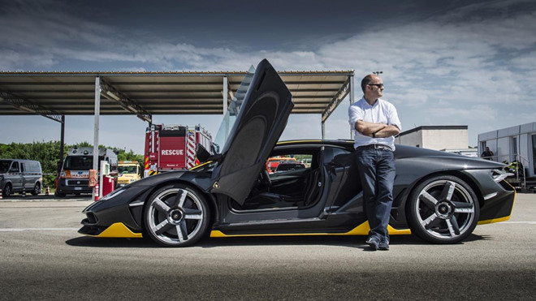
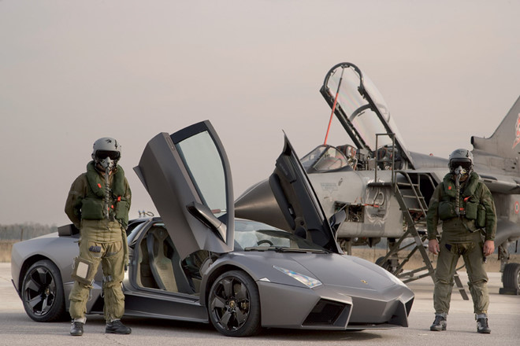
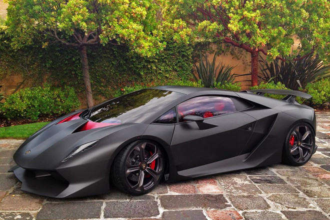
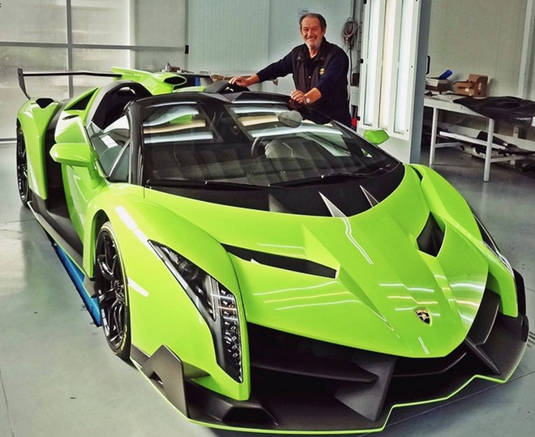
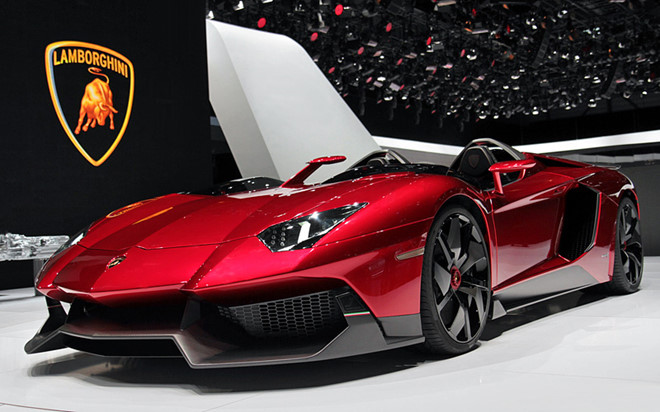
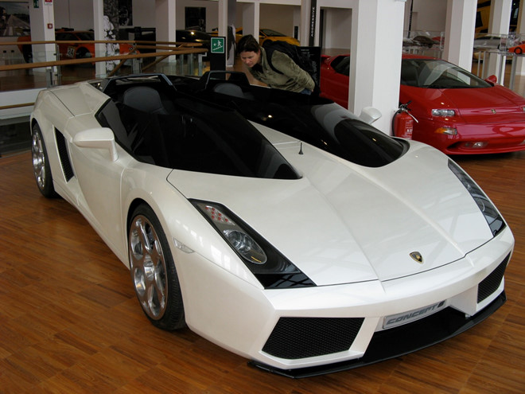
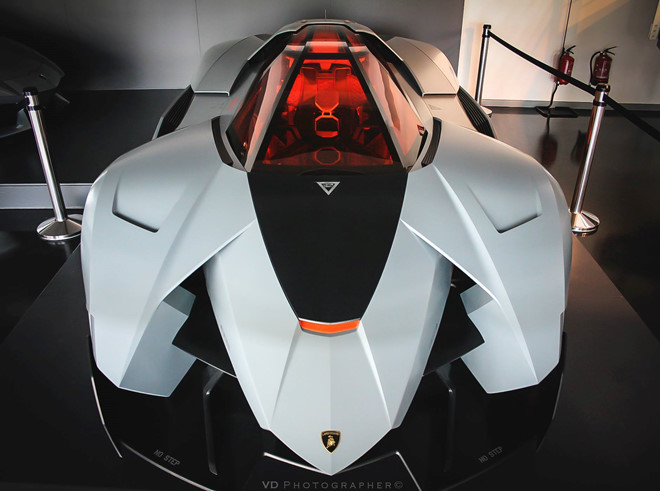

7 chiếc Lamborghini hiếm nhất thế giới
Lamborghini thường tạo ra những chiếc xe đặc biệt nhân dịp kỷ niệm của hãng. Centenario giới hạn 40 chiếc lên tới 1,9 triệu USD, hay Lamborghini Aventador J chỉ sản xuất 1 chiếc.Cùng với Ferrari, Lamborghini là cái tên quen thuộc đối với những tín đồ bốn bánh. Tuy nhiên, một số mẫu xe của Lamborghini mà bạn hầu như không có cơ hội gặp được vì số lượng sản xuất rất ít.
1.Lamborghini Centenario - 40 chiếc
Centenario trong tiếng Italy có nghĩa là thế kỷ, mẫu xe ra đời nhằm kỷ niệm 100 năm ngày sinh của nhà sáng lập Ferrucco Lamborghini. Ngoài ra, chiếc siêu xe thế kỷ còn là sản phẩm nổi bật tiếp theo của hãng Lamborghini sau các phiên bản Aventador J, Sesto Elemento và Veneno.Lamborghini Centenario được phát triển dựa trên bộ khung liền khối (monocoque) từ carbon với thiết kế mang tính khí động học cao.Lamborghini Centenario được trang bị động cơ V12 dung tích 6.5 lít sản sinh công suất tối đa 760 mã lực, mô-men xoắn cực đại 507 Nm tại tua máy 8.600 vòng/ phút. Nhờ đó, "siêu bò" có thể tăng tốc từ 0-100 km/h trong 2,8 giây và 0-300 Km/h trong 23,5 giây, trước khi đạt tốc độ tối đa 349 Km/h.Lamborghini sẽ sản xuất giới hạn 40 chiếc Centenario, trong đó 20 bản coupe và 20 bản roadster, tất cả đều bán ở mức giá 1,9 triệu USD.

2. Lamborghini Reventón - 36 chiếc
Ở thời điểm ra mắt năm 2008, với mức giá 1,5 triệu USD, Reventón từng là siêu xe đắt nhất của Lamborghini, trước khi bị Sesto Elemento soán ngôi vào năm 2012.Thiết kế của Reventón lấy cảm hứng từ chiến đấu cơ tàng hình F22 của Không quân Mỹ với các đường nét hốc cạnh, sắc sảo. Thân xe được làm hoàn toàn bằng sợi carbon. Đây cũng là chiếc Lamborghini đầu tiên được tích hợp đèn LED ban ngày trên đèn chiếu sáng.Siêu xe sử dụng động cơ V12 dung tích 6.5 lít tương tự như trên Murcielago, tuy nhiên, công suất được nâng thêm 10 mã lực, lên 650 mã lực. Reventón chỉ mất 3,4 giây để tăng tốc từ 0-100 km/h. Vận tốc tối đa của Reventón từng được ghi nhận là 355,7 km/h khi thử tại UAE.Lamborghini chỉ sản xuất 36 chiếc Reventón từ năm 2008 đến năm 2010, bao gồm 21 chiếc bản coupe (1 chiếc được trưng bày tại Bảo tàng của Lamborghini) và 15 chiếc bản roadster.

3. Lamborghini Sesto Elemento - 20 chiếc
Được giới thiệu lần đầu tiên năm 2010 tại triển lãm xe Paris Motor Show, Sesto Elemento được trang bị khối động cơ V10 dung tích 5.2 lít sản sinh công suất 570 mã lực, mô-men xoắn cực đại 540 Nm, đi kèm với hộp số 6 cấp, hệ dẫn động 4 bánh toàn thời gian. Siêu xe hiếm của Lamborghini có khả năng tăng tốc từ 0-100 km/h trong 2,5 giây trước khi đạt vận tốc tối đa 320 km/h.Sesto Elemento được sản xuất tại trụ sở chính của Lamborghini ở Sant’Agata. Đây cũng là nơi hãng xe Italia dành riêng để sản xuất những siêu xe có số lượng giới hạn như Reventon hay Veneno.Ngoại thất của Sesto Elemento không chỉ sở hữu kiểu dáng ấn tượng, mà còn được làm bằng sợi carbon đặc biệt, rất nhẹ nhưng cũng rất chắc chắn. Chính vì thân xe có nhiều chi tiết làm từ sợi carbon nên trọng lượng chỉ ở mức 999 kg, mang lại tỷ lệ cân nặng/sức mạnh ở mức 1,75 kg/1 mã lực.

4. Lamborghini Veneno - 14 chiếc
Siêu xe McLaren P1 LM sẽ là phiên bản "nhanh nhất, hiếm nhất và cuối cùng" của dòng siêu xe hybrid P1. Mặc dù được giao tới khách hàng bởi bộ phận Special Operations của McLaren, nhưng chiếc xe lại được tạo ra bởi Lanzante Motorsport, một hãng chế tạo xe đua.Giống như P1 GTR, P1 LM cũng được trang bị động cơ V8 3.8 lít và một động cơ điện hoạt động song song, tạo ra tổng công suất 1000 mã lực.Lanzante đã không chỉ giữ nguyên thiết kế đậm chất xe đua của P1 GTR mà còn tiếp tục cải tiến nó với cánh đuôi cùng cản trước mới, để tăng thêm 40% lực nén thân xe xuống mặt đường. Hiện tại, chỉ có 5 chiếc đã được chế tạo, tất cả chúng đều có chủ.

5. Lamborghini Aventador J - 1 chiếc
Xuất hiện tại triển lãm Geneva năm 2012, Aventador J mang tới vẻ đẹp cùng sự mới lạ đến ngỡ ngàng vì một chiếc xe không mui, không kính chắn gió.Bản J là mẫu Aventador thấp nhất mà Lamborghini từng xây dựng. Đây cũng là siêu xe giá siêu đắt nhưng không điều hòa, không hệ thống định vị vệ tinh, tất cả vì mục tiêu giảm trọng lượng.
Dựa trên nền tảng Aventador LP700-4 coupe, nhưng thứ duy nhất mà mẫu xe này để lại trên Aventador J chỉ là động cơ V12 dung tích 6.5 lít công suất 691 mã lực. Phần lớn các chi tiết của thân đều được thiết kế lại. Hai thanh an toàn bố trí thêm ở sau ghế đơn.Chỉ sau vài ngày xuất hiện tại Geneva, Aventador J đã được bán cho một nhà sưu tập giấu tên với giá 2,74 triệu USD.

6. Lamborghini Concept S - 1 chiếc
Lamborghini giới thiệu bản chiếc Concept S đặc biệt lần đầu tiên tại Geneva Motor Show 2005 ở dạng sẵn sàng được sản xuất. Thời điểm đó, dường như hãng xe Italy đã bật đèn xanh để sản xuất thương mại mẫu xe này.Nhưng sau đó dự án không thể diễn ra vì lý do chi phí sản xuất quá lớn. Từ dự định ban đầu sẽ sản xuất 100 chiếc Concept S, đến nay chỉ có duy nhất một chiếc mang số hiệu 001 được ra đời.Siêu xe mang thiết kế tương tự Gallardo nhưng nét độc đáo nằm ở việc không có mui và không có kính chắn gió, tương tự Aventador J. Concept S sử dụng động cơ 5.0 lít V10 cho công suất 500 mã lực, giống như trên chiếc Gallardo.

7. Lamborghini Egoista - 1 chiếc
Lamborghini Egoista được thiết kế vào năm 2013 trong chuỗi sự kiện đánh dấu ngày kỷ niệm 50 năm thành lập của hãng Lamborghini. Lamborghini đã xây dựng mẫu xe Egoista với cảm hứng từ mẫu trực thăng chiến đấu Apache. Và điều đặc biệt là mẫu xe chỉ có một chỗ ngồi, như những chiếc xe đua công thức một.Egoista được phát triển dựa trên hệ thống động cơ của “người anh em” Gallardo. Cung cấp sức mạnh cho xe là khối động cơ V10 5.2 lít mang lại công suất 600 mã lực.Lamborghini Egoista được sản xuất bằng những loại vật liệu nhẹ có độ bền cao như sợi carbon và nhôm. Thiết kế tổng thể của xe mang những đường nét khá cơ bắp. Dù có một chỗ ngồi nhưng khả năng cân bằng của xe cũng rất tốt.Nội thất xe được trang bị ghế ngồi xe đua, tích hợp đai an toàn 4 vị trí, túi khí và một bảng điều khiển nhỏ. Để có thể ra khỏi xe, người lái phải tháo vô lăng ra trước.
